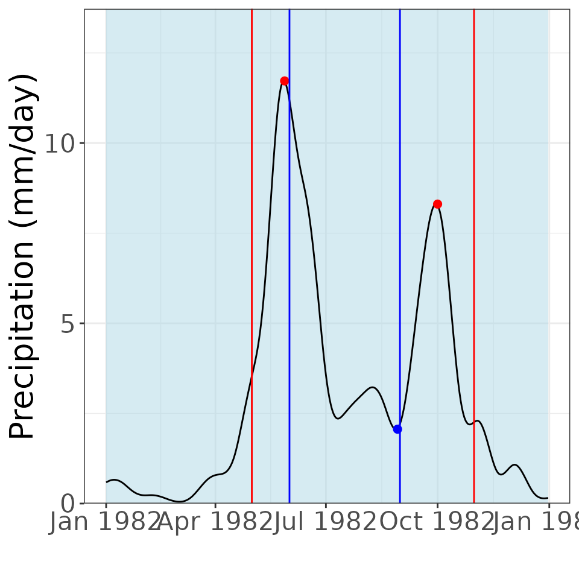

The purpose of the msdrought package is to take the input of a series of rainfall data and to extract some key information (such as dates, rainfall intensity, duration of a rainfall period, and more) in order to characterize the Mid-Summer Drought climatic phenomenon present in Central America. This vignette will walk you through the process of taking a raster input and extracting a the statistics for the entire timeseries of the provided data.
We will begin by loading in the relevant packages and the raster data we plan to use. In order to get this data to function with the msdrought package’s functions, we’ll need to extract a single point of spatial data in the form of a timeseries. This will be done using the “terra” package. The “tidyr” package will be useful for streamlining the code. If the data you plan to analyze is in the form of an xtimeseries (xts) object, you only need to load the package and proceed to the next step.
library(terra)
#> terra 1.7.71
library(tidyr)
#>
#> Attaching package: 'tidyr'
#> The following object is masked from 'package:terra':
#>
#> extract
library(lubridate)
#>
#> Attaching package: 'lubridate'
#> The following objects are masked from 'package:terra':
#>
#> intersect, union
#> The following objects are masked from 'package:base':
#>
#> date, intersect, setdiff, union
library(stringr)
library(ggplot2)
library(xts)
#> Loading required package: zoo
#>
#> Attaching package: 'zoo'
#> The following object is masked from 'package:terra':
#>
#> time<-
#> The following objects are masked from 'package:base':
#>
#> as.Date, as.Date.numeric
data <- system.file("extdata", "prcp_cropped.tif", package = "msdrought") # This loads the data included in the package, but you would attach your own
# Extract 1 spatial point from the raster data
infile <- terra::rast(data)
lon <- -86.2621555581 # Longitude of the spatial point we're interested in analyzing
lat <- 13.3816217871 # Lattitude of the spatial point we're interested in analyzing
lonLat <- data.frame(lon = lon, lat = lat)
# Set up precipitation data by extracting the data located at our longitude and lattitude
location <- vect(lonLat, crs = "+proj=longlat +datum=WGS84")
precip <- terra::extract(infile, location, method = "bilinear") %>%
subset(select = -ID) %>%
t()
precip[precip < 0] <- 0 # replace any negative (errant) values with zeroes
precipFrame <- data.frame(precip)
# Set up dates (time) data which will be used in creating our time series
timeFrame <- terra::time(infile) %>%
as.Date() %>%
data.frame()
startDate <- as.Date(as.character(timeFrame[1, 1]))
endDate <- as.Date(as.character(timeFrame[nrow(timeFrame), 1]))
datesSequence <- seq(from = startDate, to = endDate, by = 1)
timeseriesFrame <- cbind(timeFrame, precipFrame)
colnames(timeseriesFrame) <- c("Date", "Precipitation")
# Make the data into an xtimeseries that the package recognizes
x <- xts(timeseriesFrame$Precipitation, timeseriesFrame$Date)At this point, we taken a raster of data and extracted from it a series of precipitation values and a series of time for a single location. This data can now be used with the MSD package and its functions. Alternatively, as mentioned above, you could directly load in timeseries data. The workflow for that is much simpler than that of loading and preparing a raster.
data("timeseries") # This loads the data included in the package, but you would attach your own
x <- timeseriesThese two processes both end with data in the form of a timeseries that the package can interpret and perform calculations on.
Now, we will calculate the relevant statistics of related to the MSD. These statistics include the intensity, duration, firstMaxValue, secondMaxValue, and the minimum rainfall points.
Before we calculate these pieces of data, however, we will need to understand the background processes.
# Use the msdDates function to extract the key dates related to the window of the MSD
# msdDates = msdDates(x, firstStartDate, firstEndDate, secondStartDate, secondEndDate)
keyDatesTS <- msdrought::msdDates(time(x))
# Note: The windows (between the start and end dates) can be user-defined, but leaving the field blank uses the parameters determined by the founders of this package
# Filter the data using a bartlett noise filter by using the msdFilter function
# msdFilter = msdFilter(x, window)
filterTS <- msdrought::msdFilter(x, window = 31, quantity = 2)
# Note: The founders of this package recommend filtering the data twice, but this is left up to the user to decideNow that we have the key dates and a filtered timeseries, it is time to calculate the statistics related to the MSD. We will see an output of 1 value per year of data. Because the timeseries we’ve created from the raster is for 2 years of data (1981 and 1982) we will see 2 values of each parameter.
# Use msdStats and r's built-in apply function to apply the intensity calculation across the filtered timeseries data
# msdStats = msdStats(x, dates, fcn)
durationValues <- msdrought::msdStats(filterTS, keyDatesTS, fcn = "duration")
#> Registered S3 method overwritten by 'quantmod':
#> method from
#> as.zoo.data.frame zoo
intensityValues <- msdrought::msdStats(filterTS, keyDatesTS, fcn = "intensity")
firstMaxValues <- msdrought::msdStats(filterTS, keyDatesTS, fcn = "firstMaxValue")
secondMaxValues <- msdrought::msdStats(filterTS, keyDatesTS, fcn = "secondMaxValue")
minValues <- msdrought::msdStats(filterTS, keyDatesTS, fcn = "min")After completing this step, we will have a numeric list of all the statistics values for every year of data.
These parameters can always be calculated explicitly as shown above, however, there are 2 functions within the MSD package that are much more comprehensive and use the previously discussed functions to greater use. These functions are msdMain and msdGraph.
msdMain is a function that calculates all of the relevant statistics at once and outputs it in a single table.
# msdMain takes the input parameters from their basic form and calculates the relevant statistics
# msdMain = msdMain(x, firstStartDate, firstEndDate, secondStartDate, secondEndDate, window, quantity)
allStats <- msdrought::msdMain(x)msdGraph is used to plot the timeseries and perform an analysis on the calculated data and parameters to determine if a single year in question represents a year with a Mid-Summer Drought or not. Below, we’ll use 1982 as an example, as there was a Mid-Summer Drought during that year.
# Use msdGraph to calculate the statistics and analyze them to determine if an MSD was present or not during the course of one year
# msdGraph = msdGraph(x, year, firstStartDate, firstEndDate, secondStartDate, secondEndDate, window, quantity)
graph1982 <- msdrought::msdGraph(x, 1982)
plot(graph1982)
And that is all the important information required to understand and use the MSD package!